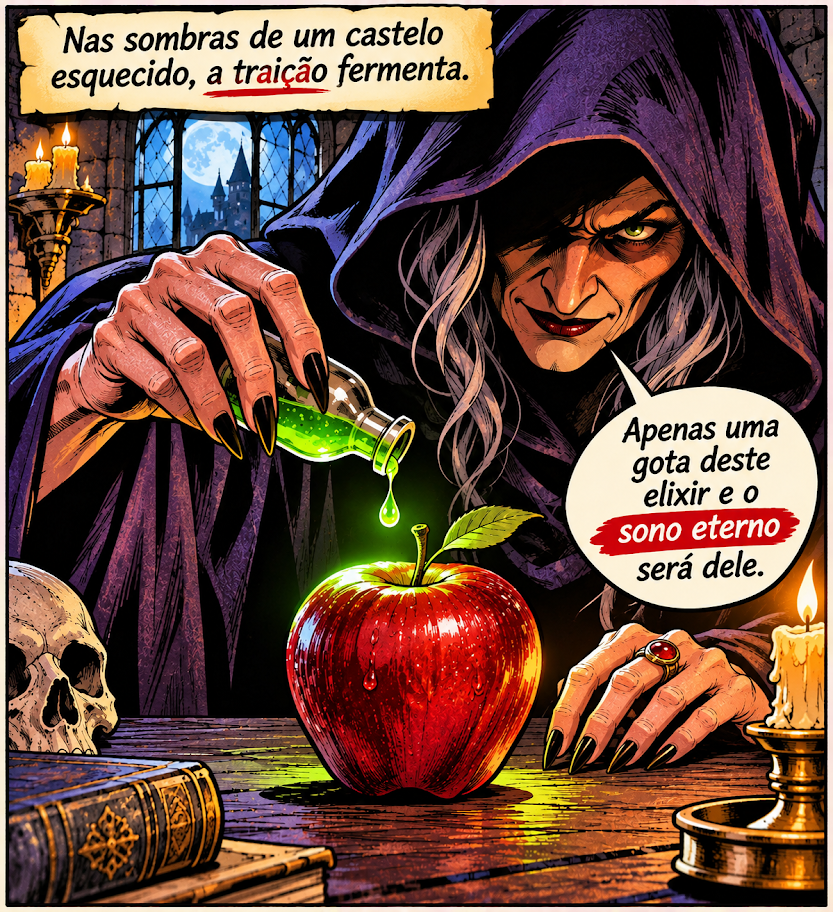
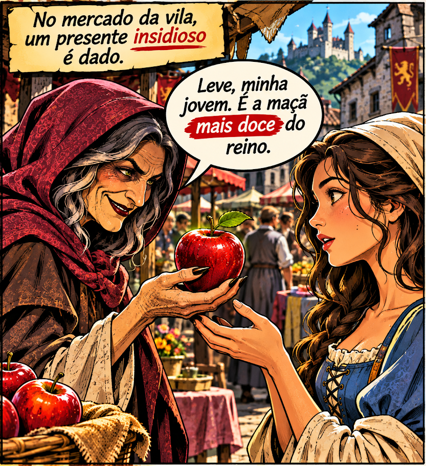
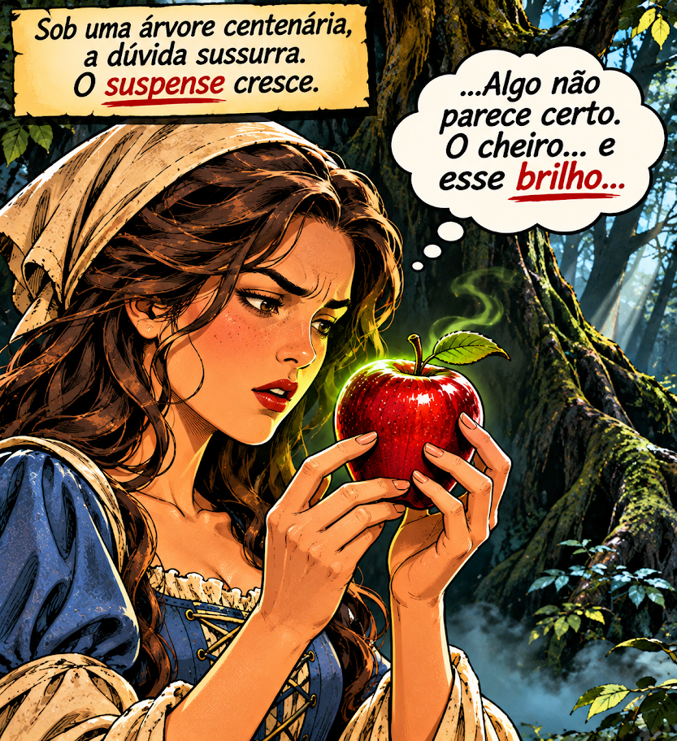
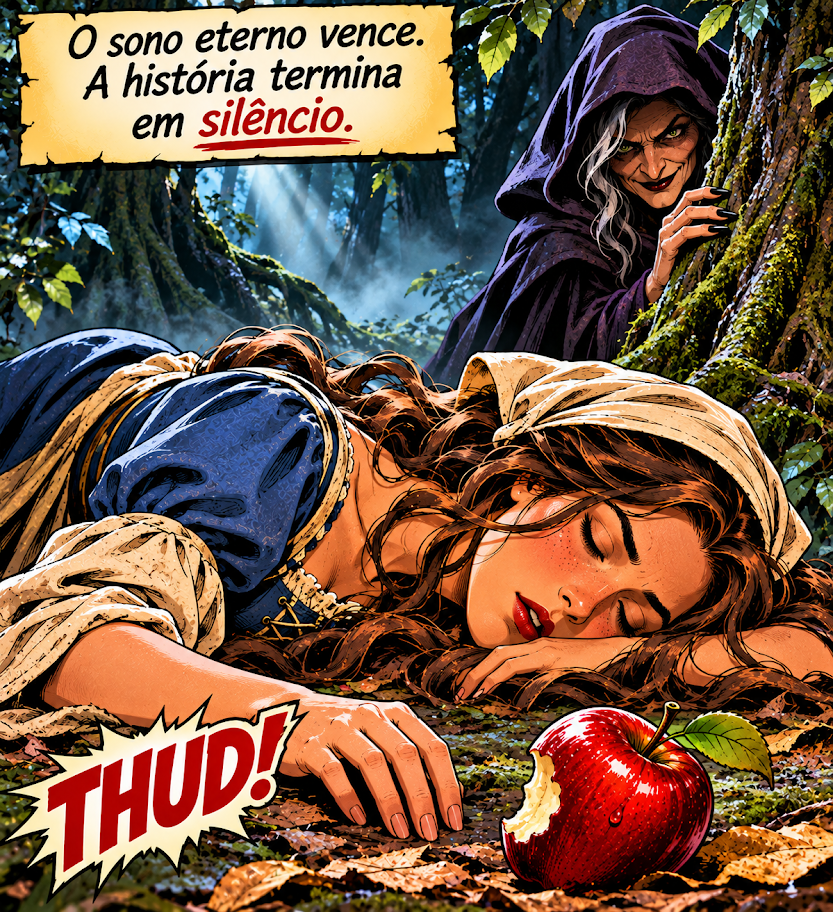
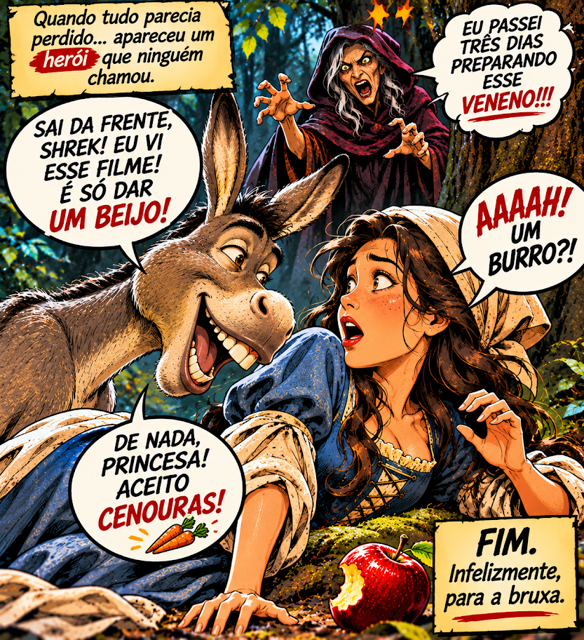

Era uma vez uma menina chamada Luna que adorava explorar o bosque perto de sua casa.
"Hoje vou descobrir um segredo escondido neste lugar!"

De repente, Luna encontrou um mapa antigo escondido dentro de um tronco oco.
"Isso parece um mapa do tesouro! Mas está cheio de enigmas..."

Um corvo sábio apareceu e disse: "Somente quem respeita a natureza pode encontrar o caminho."
"Eu sempre cuidei das plantas e dos animais. Posso tentar!"

Luna seguiu as pistas e chegou a uma clareira iluminada por vagalumes mágicos.
"O segredo não é um tesouro de ouro... é esta beleza que sempre esteve aqui!"

Luna voltou para casa com o coração cheio de alegria e uma nova missão: proteger o bosque.
"A maior aventura é cuidar do mundo que nos cerca. FIM!"